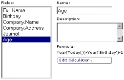
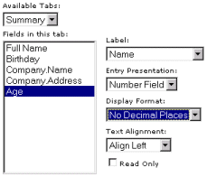
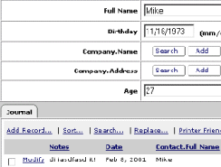

| Help Topics > Concepts & Tutorials |
|
DatabasePlus Tutorial 2 Extending the Simple Contact Manager |
| This short tutorial will get you acquainted with constructing calculated fields and creating summary and detail reports. |
|
Here, you will remove the Age field from the Contacts table and replace it with a calculated field that uses the contact's birthday to calculate the person's age. From the Desktop, click Author under your database Select Tables from the Type navigation pull-down menu
Select Views from the Type navigation pull-down menu
It should look like this:  Select Browse from the Task navigation pull-down menu to view the results. Notice that the Age field is about right (if you entered your real birth-date in Tutorial 1), but it has one decimal point and a trailing 0. That is because the default number format set in the database section is set to One Decimal Place. You can change the database default, but there is a better solution: create a report. A report is similar to a view when browsing, but has many more features for formatting. A view is still needed to consolidate multiple tables into one picture and to create calculations. Reports can be based on tables or views, but by using views, you have much more control in the final results. 2. Creating the Contacts Report Here, you will create the contacts report. Select Author from the Task navigation pull-down menu and Reports from the Type menu.
It should look like this:  Select Browse from the Task navigation pull-down menu. You'll notice that the Age field is displayed as an integer, with no decimal places. Now click Modify on one of the records to view its details. You'll notice that there is a field called Contacts, with all of the fields data set to Contacts. This happens because the details view of this record is only a table, not a report. If you choose a report as a details view, you have the power to use a view's calculated fields and data relationships. 3. Creating the Summary Details Report Create a Journal View using the steps used to create a Contacts View in Tutorial 1. Select Author from the Task navigation pull-down menu.
Select Summary from the Name navigation pull-down menu.
Select Browse from the Task navigation pull-down menu. Now click Modify on one of the records to view its details. You'll notice that the Journal tab is now using the Journal Details report, which includes all the fields from contact, not just a Contact field as before. It should look like this:  You should now have a clearer picture of how to use DatabasePlus to construct tables, views and reports. This concludes Tutorial 2. |